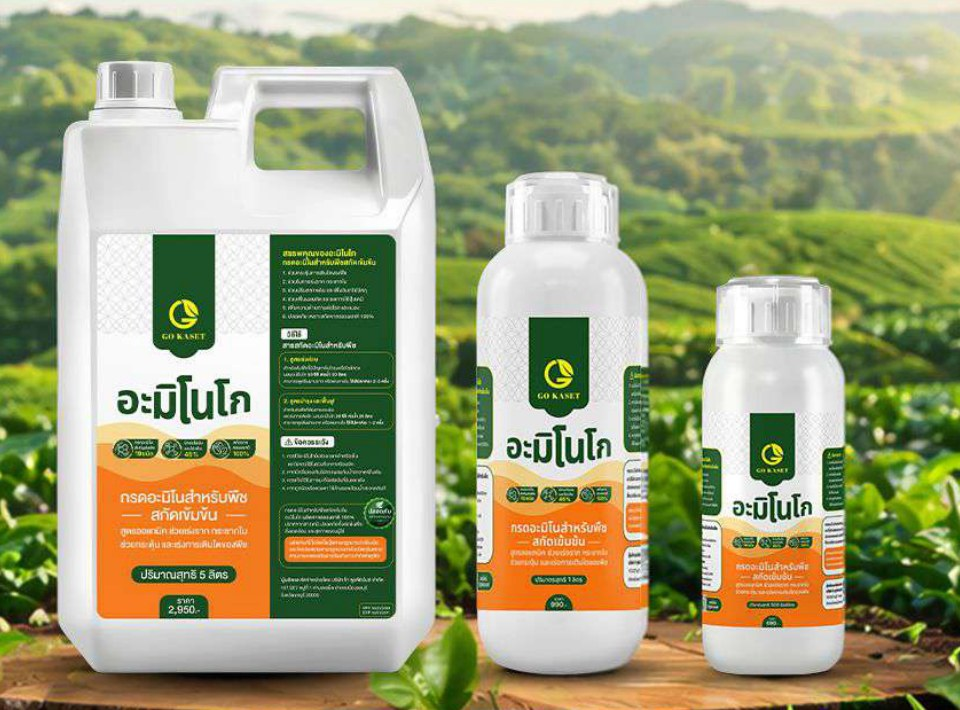
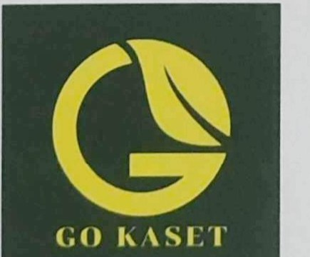
เราเริ่มจากการเป็นผู้เชี่ยวชาญด้านคลังสินค้าและโลจิสติกส์ (Fulfillment) และเห็นทุกวันว่าสินค้าเกษตรจำนวนมากไปถึงมือเกษตรกรช้า แพง และไม่มีใครดูแลหลังการขาย
บริษัท โก ฟูลฟิลเม้นท์ จำกัด จดทะเบียนเมื่อ 28 มีนาคม 2568 ที่จังหวัดชลบุรี ด้วยทุนจดทะเบียน 1,000,000 บาท และขยายจากงานบริหารคลังสินค้าเข้าสู่การวิจัยและพัฒนาผลิตภัณฑ์บำรุงพืชภายใต้แบรนด์ "โกเกษตร (GO KASET)" โดยใช้จุดแข็งเดิมคือระบบจัดส่งที่แม่นยำและรวดเร็ว มาเป็นฐานของการดูแลลูกค้าเกษตรกร
ภายใน 12 เดือนแรกของการขายผ่านช่องทางออนไลน์ แบรนด์มีคำสั่งซื้อจากเกษตรกรมากกว่า 18,000 รายการ และมีผู้ซื้อกลับมาซื้อซ้ำในสัดส่วนที่สูงกว่าค่าเฉลี่ยของแพลตฟอร์ม
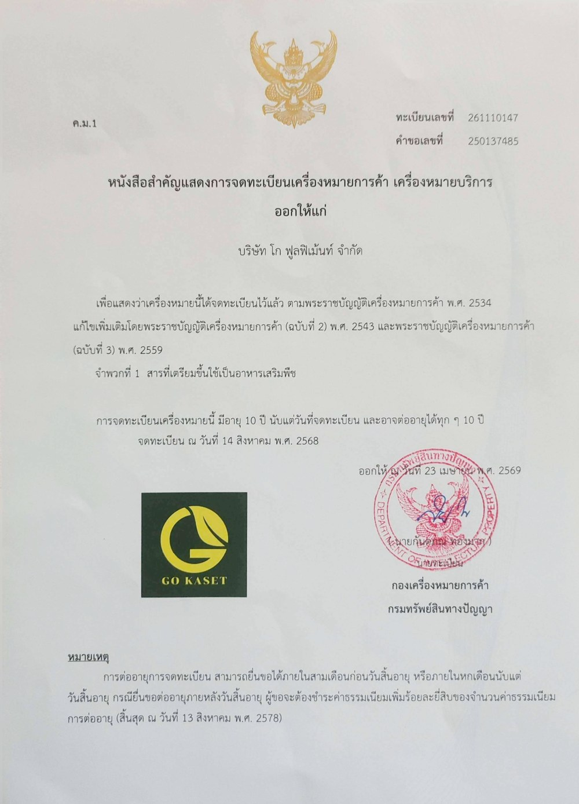
ร้อนจัด ฝนทิ้งช่วง น้ำท่วมฉับพลัน ทำให้ต้นพืชชะงักและโทรม เกษตรกรต้องการตัวช่วยที่เห็นผลเร็ว ไม่ใช่รอรอบปุ๋ยถัดไป
ราคาปุ๋ยเคมีผันผวนตามตลาดโลก เกษตรกรมองหาสิ่งที่ช่วยให้พืชใช้ธาตุอาหารที่มีอยู่ได้คุ้มค่าขึ้น
ปุ๋ยน้ำและฮอร์โมนมีเป็นร้อยยี่ห้อ เกษตรกรเคยผิดหวังมาแล้ว จึงเชื่อคนที่ใช้จริงมากกว่าโฆษณา
การตัดสินใจซื้อของเกษตรกรเป็นการซื้อที่ "เดิมพันสูง" เพราะถ้าผิด เสียทั้งเงินและฤดูกาล ดังนั้นสิ่งที่มีน้ำหนักที่สุดในใจผู้ซื้อคือ
อะมิโน โก ให้กรดอะมิโนที่พืชนำไปใช้ได้ทันทีทางใบ เพื่อช่วยให้ต้นแข็งแรงและฟื้นตัวจากสภาพอากาศ ในราคาที่เกษตรกรรายย่อยเข้าถึงได้ พร้อมทีมงานที่อยู่ในพื้นที่จริง
เราไม่อ้างว่าทดแทนปุ๋ยหลักหรือรักษาโรค เราอ้างสิ่งเดียวคือ เกษตรกรใช้แล้วกลับมาซื้อซ้ำ 34%
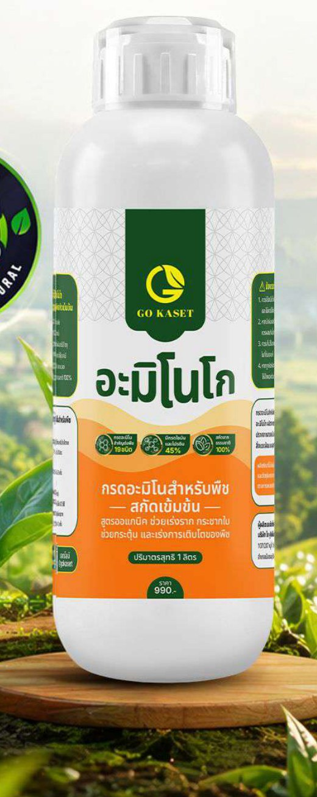
กรดอะมิโน 19 ชนิด ฟื้นต้น เร่งราก กระชากใบ สินค้าหลัก
น้ำตาลทางด่วนสำหรับพืช ให้พลังงานเร็วช่วงพืชเครียด ขายคู่กับอะมิโน โก ใน 1 ใน 5 ของคำสั่งซื้อ
ลำดับถัดไปในกลุ่มเสริมความแข็งแรงของพืช อยู่ระหว่างการวิจัย [ยืนยันขอบเขต]
| กลุ่มพืช | ระยะที่แนะนำ | อัตราใช้ | เป้าหมาย |
|---|---|---|---|
| ข้าว ข้าวโพด อ้อย | ระยะเจริญเติบโต (ข้าว 20-40 วัน) และระยะตั้งท้อง (60-70 วัน) | 20 ซีซี / น้ำ 20 ลิตร | รากแข็งแรง แตกกอ สร้างรวงและเมล็ด |
| ทุเรียน มะม่วง ไม้ผล | ฟื้นต้นหลังเก็บเกี่ยว / สะสมอาหารก่อนออกดอก / ติดผลอ่อน | 50 ซีซี ฟื้นต้น, 20 ซีซี ระยะอื่น | ใบชุดใหม่สมบูรณ์ ตาดอกคุณภาพ ลดการหลุดร่วง |
| ผักกินใบ ผักกินผล | ทุก 7-10 วัน / ช่วงย้ายกล้า / ช่วงออกดอกติดผล | 20 ซีซี / น้ำ 20 ลิตร | ใบโตสมบูรณ์ ตั้งตัวเร็ว ติดผลดี |
| ไม้ดอก ไม้ประดับ | ทุก 7-14 วัน | 20 ซีซี / น้ำ 20 ลิตร | ใบเขียวสด ดอกสมบูรณ์ |
| ทุกพืช กรณีต้นโทรม | เมื่อพืชประสบปัญหาจากน้ำท่วม ภัยแล้ง หรือผิดปกติ | 50 ซีซี / น้ำ 20 ลิตร | ฟื้นฟูสภาพต้นเร่งด่วน |
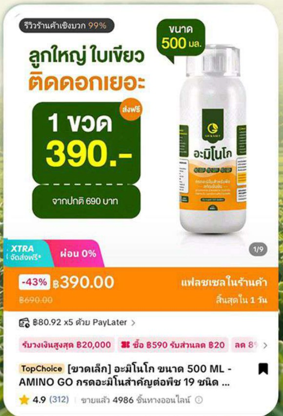
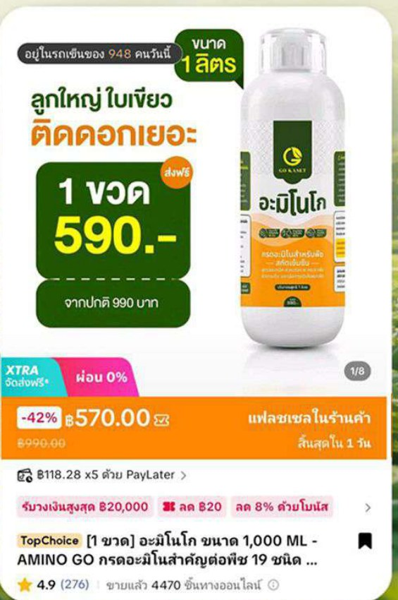
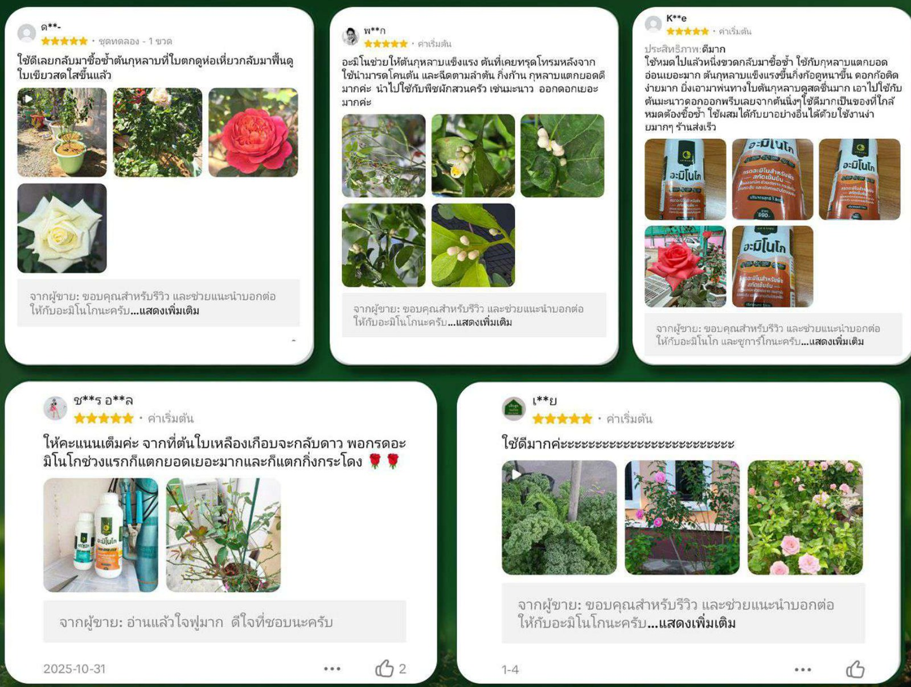
จำหน่ายในกลุ่มอาหารเสริมพืช ฉลากไม่อ้างสรรพคุณด้านโรคและแมลง
ยื่นขึ้นทะเบียนกับกรมวิชาการเกษตรในประเภทที่เหมาะสม พร้อมผลวิเคราะห์ผลิตภัณฑ์สำเร็จรูป
แปลงเรียนรู้ร่วมกับหน่วยงานส่งเสริมการเกษตรและกลุ่มเกษตรกร เก็บข้อมูลอย่างเป็นระบบ
มาตรฐานโรงงาน (GMP) และการรับรองที่จำเป็นสำหรับตลาดส่งออก
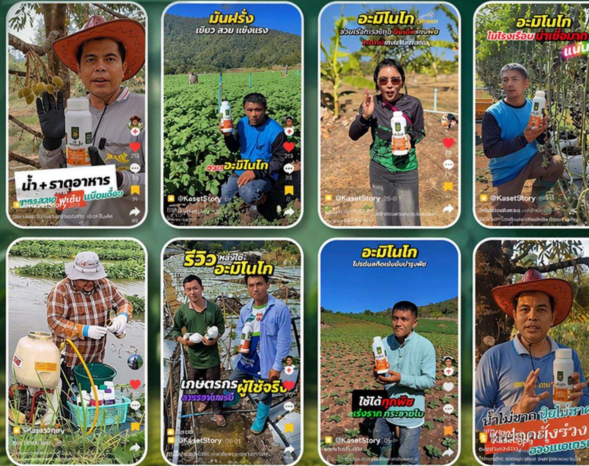
ผู้ซื้อสินค้าเกษตรเชื่อ "คนแบบเดียวกัน" ก่อนเชื่อแบรนด์ วิดีโอจากแปลงจริง ในภาษาชาวสวน คือสิ่งที่เปลี่ยนคนดูให้เป็นคนซื้อ และเปลี่ยนคนซื้อให้เป็นคนบอกต่อ
ยอดพุ่งช่วงกุมภาพันธ์ถึงเมษายน ซึ่งเป็นช่วงร้อนแล้งและช่วงบำรุงไม้ผล สอดคล้องกับจุดขายเรื่องฟื้นต้นโทรม
จาก 819 ออเดอร์ในเดือนแรก สู่ระดับ 1,300-2,800 ออเดอร์ต่อเดือนใน 8 เดือนหลัง
ช่องทาง offline และตัวแทนประจำพื้นที่ จะช่วยเติมยอดในช่วง low season ที่ออนไลน์ชะลอ
ชลบุรี ระยอง จันทบุรี รวมกันมากกว่า 1,900 ออเดอร์ ใน 12 เดือน และมีร้านค้าในจันทบุรีหลายรายรับสินค้าไปจำหน่ายต่อด้วยตนเอง สะท้อนว่าชาวสวนผลไม้ภาคตะวันออกใช้จริงและบอกต่อ
นครราชสีมา เชียงใหม่ สุพรรณบุรี และตาก (ออเดอร์น้อยแต่บิลใหญ่) แสดงว่าสินค้าถูกใช้ทั้งกับพืชไร่ ไม้ผล และพืชผัก ในทุกภูมิภาค
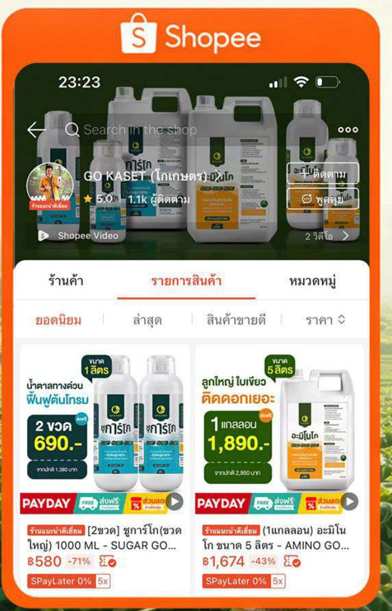
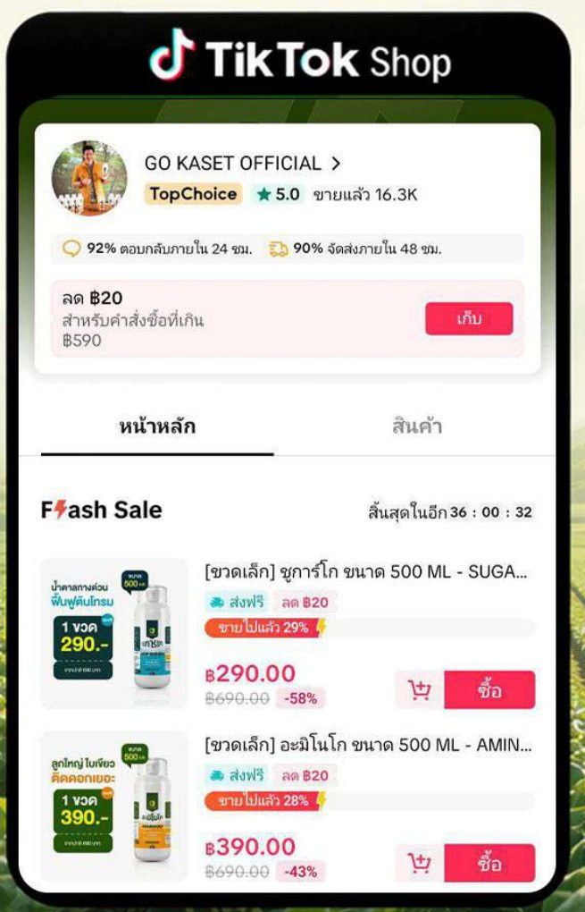
TikTok Shop GO KASET OFFICIAL
Shopee GO KASET OFFICIAL คะแนน 4.9
ขายผ่านวิดีโอ ไลฟ์ และรีวิวจากผู้ใช้จริง
ครีเอเตอร์และเกษตรกรกว่า 30 ราย รีวิวและบอกต่อผ่านระบบ affiliate โดยรายอันดับ 1 สร้างยอดขายกว่า 2.7 ล้านบาท
Facebook GO KASET OFFICIAL และ LINE สำหรับให้คำปรึกษาและรับคำสั่งซื้อโดยตรง
ขายส่งให้ร้านค้าและตัวแทน พร้อมตัวแทนประจำพื้นที่ เริ่มที่จังหวัดชลบุรี
รากฐานของบริษัทคือธุรกิจคลังสินค้าและโลจิสติกส์ ทำให้เรามีระบบสต็อก บรรจุ และจัดส่งที่แม่นยำ รองรับคำสั่งซื้อระดับ 2,800 ออเดอร์ต่อเดือนได้โดยไม่สะดุด และพร้อมขยายไปสู่การจัดส่งให้ตัวแทนและกลุ่มเกษตรกร
บริษัทพัฒนาเว็บแอปโกเกษตรสำหรับเกษตรกร รวมราคาพืช การเตือนภัย สภาพอากาศ เครื่องมือคำนวณ และศูนย์ความรู้รายพืชกว่า 70 ชนิด เพื่อให้ความรู้ฟรีก่อนการขาย [ยืนยันว่าพร้อมเปิดเผย]
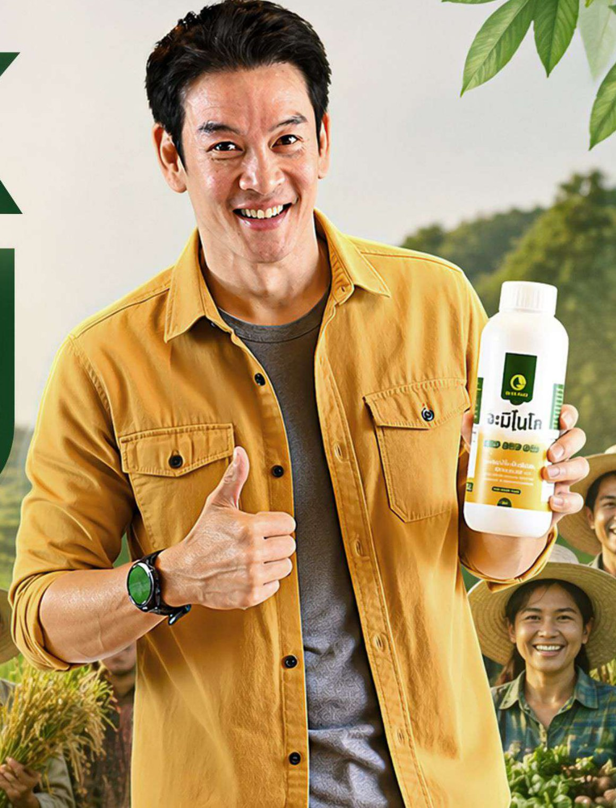
เล่าที่มา ยืนหยัดเรื่องคุณภาพและความโปร่งใส เป็นผู้ให้ความรู้ ไม่ใช่ผู้ขาย สร้าง authority
คนในพื้นที่ที่ติดต่อได้จริง ลงแปลงได้จริง เริ่มที่ชลบุรีโดย [ชื่อฉัตร] สร้าง accessibility และความไว้ใจระดับชุมชน
โครงการ Real Farmer Ambassador คัดเกษตรกรที่ซื้อซ้ำ 5 ครั้งขึ้นไป (547 ราย) มาเป็นผู้เล่าเรื่องประจำภาค สร้าง social proof ที่ซื้อไม่ได้ด้วยเงิน
เกณฑ์: เป็นที่รู้จักในกลุ่มเกษตรกร ทำเกษตรจริง ยินดีลงพื้นที่ [ยืนยันแนวคิด]
ในปี 2569 บริษัทมีคำสั่งซื้อจากผู้ซื้อที่เชื่อมโยงกับตลาดญี่ปุ่นแล้ว [ยืนยันลักษณะดีล Saikou Amino] ซึ่งเป็นจุดเริ่มต้นของการเรียนรู้ข้อกำหนดตลาดพรีเมียม
ร่วมให้ความรู้ในกิจกรรมถ่ายทอดเทคโนโลยี และจัดทำแปลงเรียนรู้ร่วมกับศูนย์เรียนรู้หรือกลุ่มเกษตรกร โดยบริษัทรับผิดชอบค่าใช้จ่าย และไม่จำหน่ายสินค้าในกิจกรรมของรัฐ
ราคาสำหรับกลุ่ม การอบรมวิธีใช้ และการติดตามผลในแปลงของสมาชิก
สินค้าที่ลูกค้าถามหาอยู่แล้วจากออนไลน์ ระบบจัดส่งที่แม่นยำ สื่อการขาย และการสนับสนุนการตลาดในพื้นที่
ความร่วมมือทดสอบประสิทธิภาพและพัฒนาสูตร เพื่อยกระดับสู่มาตรฐานและนวัตกรรม
107/207 หมู่ 1 ตำบลเสม็ด อำเภอเมืองชลบุรี จังหวัดชลบุรี 20000
เลขทะเบียนนิติบุคคล 0205568022915
โทร 098-2264556 | gokasetgo@gmail.com
Facebook GO KASET OFFICIAL | TikTok @gokaset | Shopee GO KASET OFFICIAL
นาย [ชื่อ-นามสกุล ฉัตร]
โทร [เบอร์]